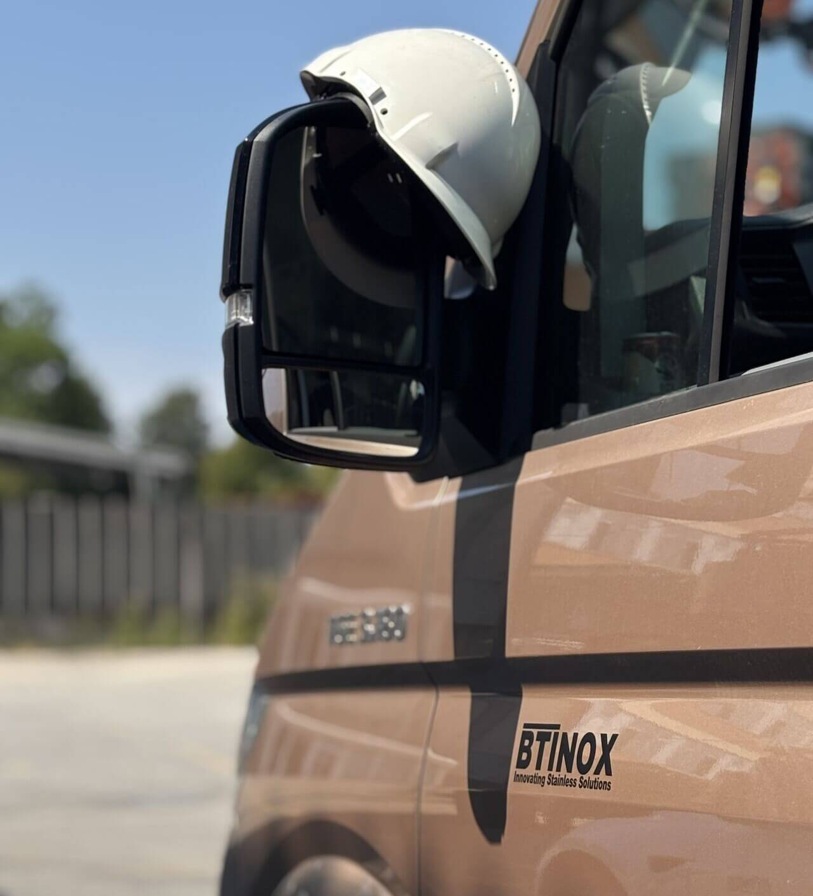

Inox in jeklena drsna vrata za dom, podjetje ali industrijsko halo – ročna ali avtomatska, v kateri koli dimenziji.
Zaprosite za ponudboDrsna vrata so idealna rešitev, kjer prostora za klasična krila ni. BT Inženiring projektira in izdeluje drsna vrata za vse namene – od elegantnih vhodnih vrat za poslovno stavbo do masivnih industrijskih portalov za tovarniško halo.
Okviri so iz nerjavnega jekla (inox) ali jeklenih profilov. Polnilo je lahko jeklen panel, perforirana pločevina, kovinska rešetka ali steklena površina. Pogon je ročni ali električni – na zahtevo vgradimo avtomatiko z varnostnimi senzorji.

Vsaka drsna vrata, ki zapustijo našo delavnico, so narejena natančno, funkcionalno in prilagojena vašim potrebam.
Enojna, dvojna ali teleskopska vrata v katerikoli širini in višini.
Elektromotorni pogon z varnostnimi senzorji in daljincem po naročilu.
Jeklen panel, kovinska rešetka, perforirana pločevina ali steklena površina.
Nudimo tudi vzdrževanje in popravilo obstoječih drsnih vrat in pogonov.
Izberemo pravo vrsto glede na vaše prostore, namen in željeno stopnjo avtomatizacije.
Elegantna inox ali jeklena drsna vrata za vhod v stanovanjski objekt ali garažo.
Masivna jeklena drsna vrata za industrijske hale, skladišča in logistična središča.
Električno gnana vrata z varnostnimi senzorji za trgovska in poslovna poslopja.
Preprost in pregleden postopek – od prvega stika do montaže na objektu.
Stopimo v stik, obiščemo lokacijo in skupaj z vami določimo mere, material in obliko.
Pripravimo tehnični načrt in cenovno ponudbo prilagojeno vašim željam in proračunu.
Vaše naročilo natančno izdelamo v lastni kovinarski delavnici z modernimi stroji.
Dostavimo in profesionalno montiramo na objektu – predaja z garancijo in brez skrbi.